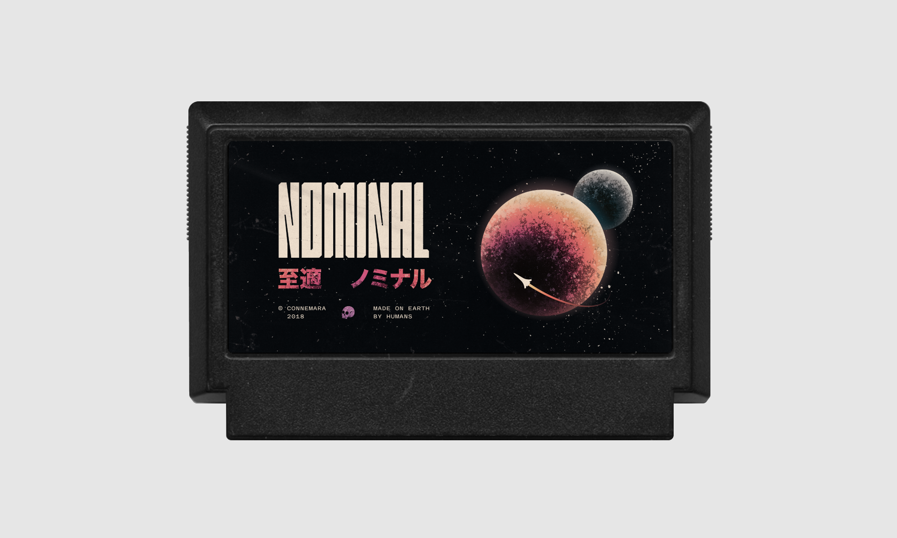
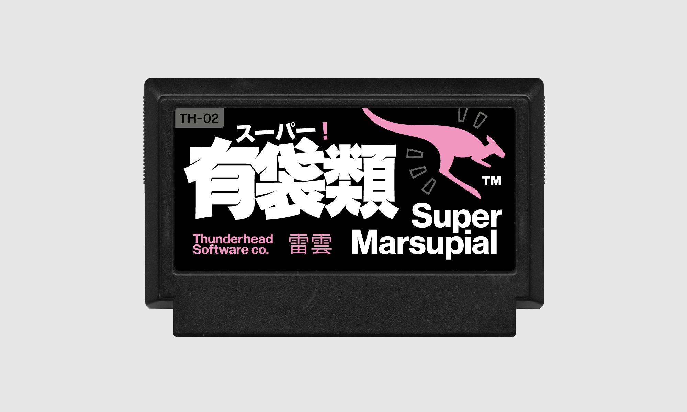
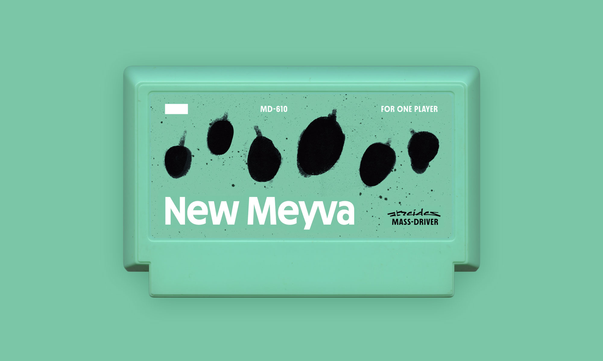
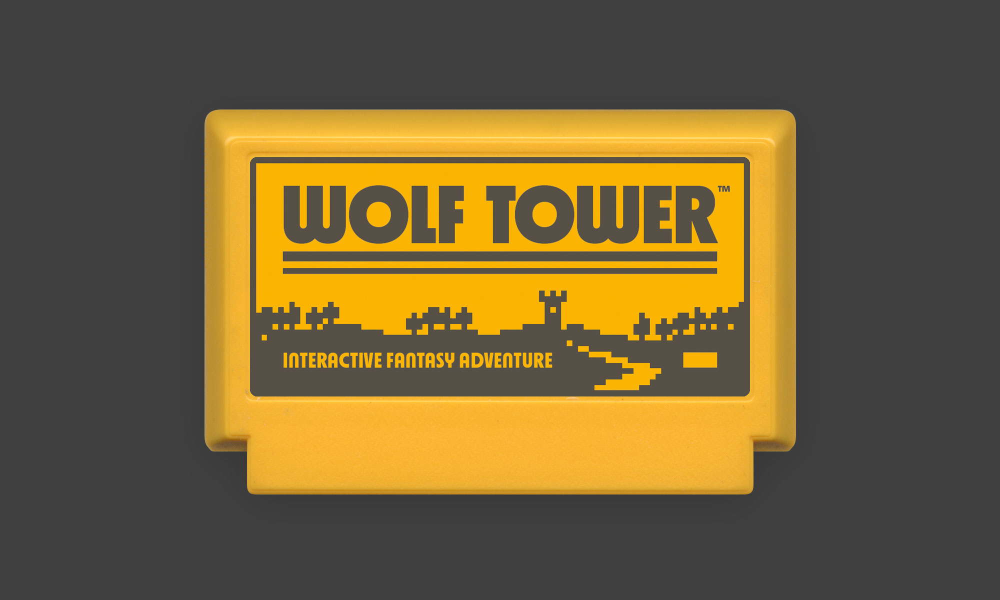

Fictional video games for the Nintendo Famicom (2018–21)
Entries into the My Famicase Exhibition held annually online and in Tokyo by Meteor. For each entry, the game title, description and cover art are all created without any restrictions or theme.

Nominal (2018) · A game about orbital mechanics and the laws of physics.
Take on the role of a spacecraft commander, exploring the inner planets of the Solar System. Time your manoeuvres, optimise your fuel usage, and conquer the planets in this slow-paced puzzle for 1 player.
The hero lettering is based on Helium/Gold. The textures were created with finely-ground charcoal dropped onto paper from above.

Super Marsupial (2019) · A game about being a kangaroo.
You’ve got the strongest legs on the continent — now it’s time to use them. Leap across the outback in search of rare and exotic flowers, but watch your step: if you trip up, anything kept in your pouch will fall out!
Again the hero lettering is custom, with supporting latin type set in a combination of Neue Haas Grotesk, Univers, and Forma DJR (mostly just to be difficult).

New Meyva (2020) · A game about gardening on an alien planet.
The garden world is calling. Discover its fruits, learn how to grow them, and build a new home on the planet of ten thousand colours.
The type on this cover is a super early version of MD Nichrome. The illustrations were made in Procreate, and the tiny ‘Atreides’ logo was digitised from a sketch made with a ruling pen.

Wolf Tower (2021) · A frightening fantasy adventure in a mysterious tower.
When the moon is full, a faint light burns in the highest window — and in the town below, people disappear. Face danger, excitement and adventure as you climb the many floors of WOLF TOWER to defeat the terrible foe at its top!
For this entry I allowed myself only two colours and one typeface — all of the type here is MD Nichrome, shamelessly demonstrating the stylistic alternates I added shortly before making this piece.